| | Home | Publications | Students | Academic Services | Awards | Publications | 中文主页 | |
Selected Publications
For a complete list, please check my google scholar.

|
Revisiting the Data Sampling in Multimodal Post-training from a Difficulty-Distinguish View. |

|
Multi-organ medical image segmentation via adaptive disentangled domain generalization collaborative learning. |

|
RadKAM: Attention-driven Kolmogorov-Arnold Model for automatic radiation-induced lymphopenia prediction by multimodal learning. |

|
SWinMamba: Serpentine Window State Space Model for Vascular Segmentation. |

|
CFTA: Class-wise Fair Test-time Adaptation of Biased Models for Long-tailed Recognition. |

|
AIDC: Benchmark for Analytical Learning in Incremental Disease Classification. |

|
Uncertainty-aware consistency learning for semi-supervised medical image segmentation. |
|
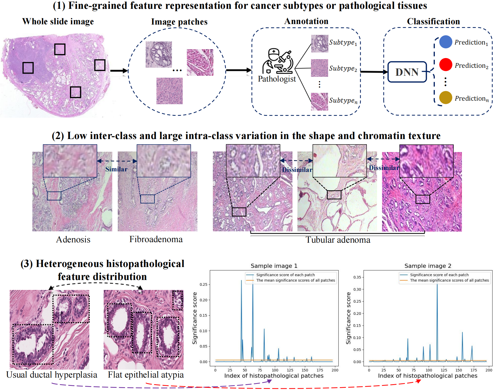
|
MIST: Multi-Instance Selective Transformer for Histopathological Subtype Prediction. |
|
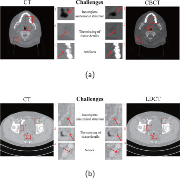
|
Generating synthesized computed tomography from CBCT/LDCT using a novel Generative-Transformer Adversarial-CNN. |
|
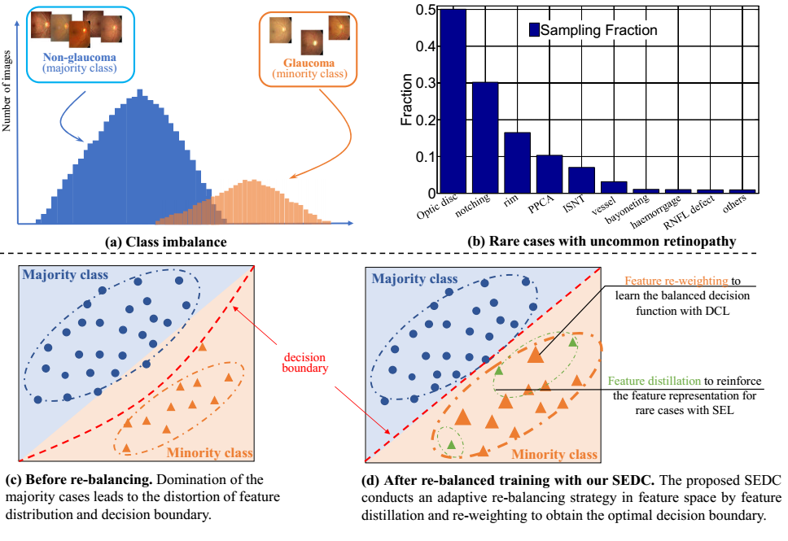
|
The macular inner plexiform layer thickness as an early diagnostic indicator for Parkinson’s disease. |
|
|
Diagnosing glaucoma on imbalanced data with self-ensemble dual-curriculum learning. |
|
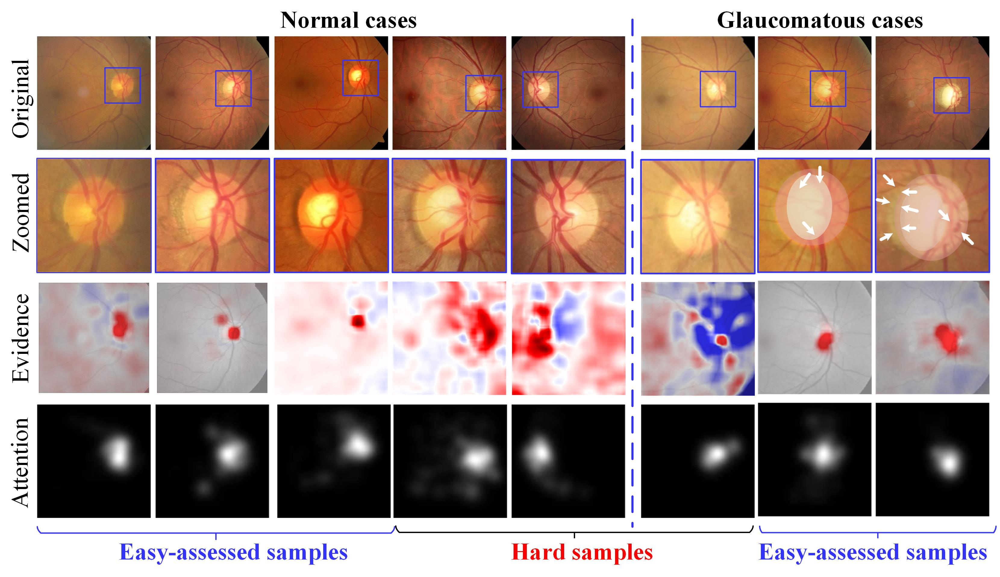
|
EGDCL: An Adaptive Curriculum Learning Framework for Unbiased Glaucoma Diagnosis. |
|
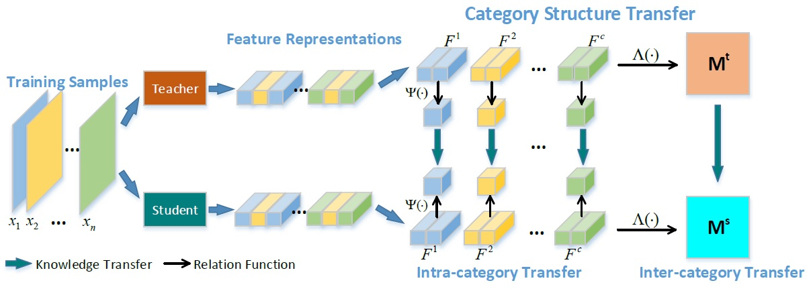
|
Improving Knowledge Distillation via Category Structure. |
|
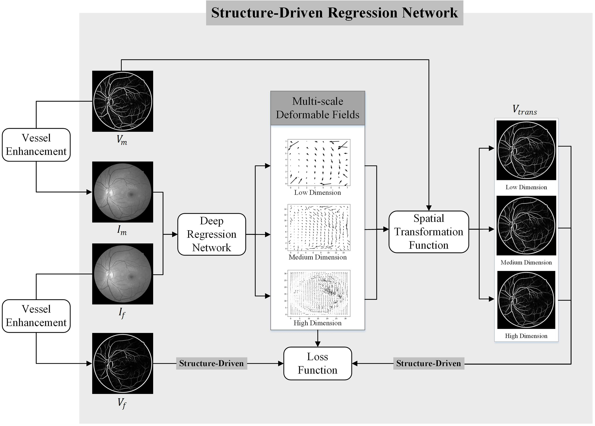
|
Non-rigid retinal image registration using an unsupervised structure-driven regression network. |
|
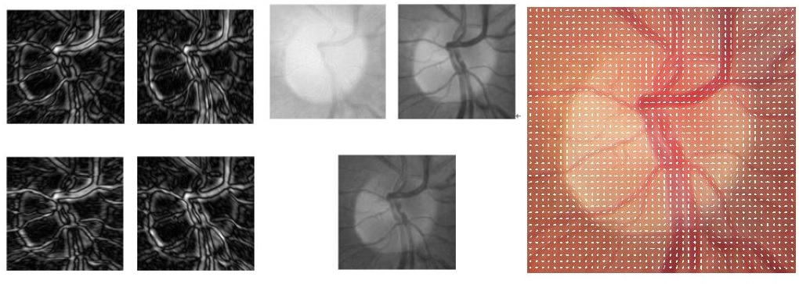
|
A Survey of Dictionary Learning in Medical Image Analysis and Its Application for Glaucoma Diagnosis. |
|
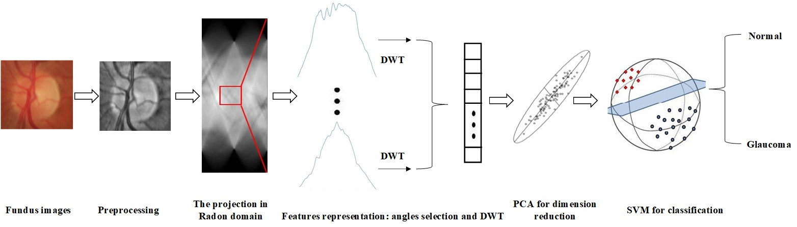
|
A novel glaucomatous representation method based on Radon and wavelet transform. |
|
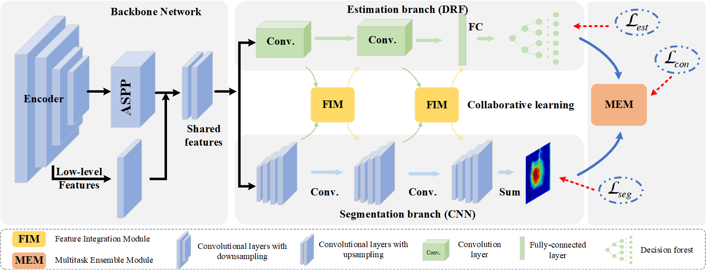
|
Multi-indices quantification of optic nerve head in fundus image via multitask collaborative learning. |
|
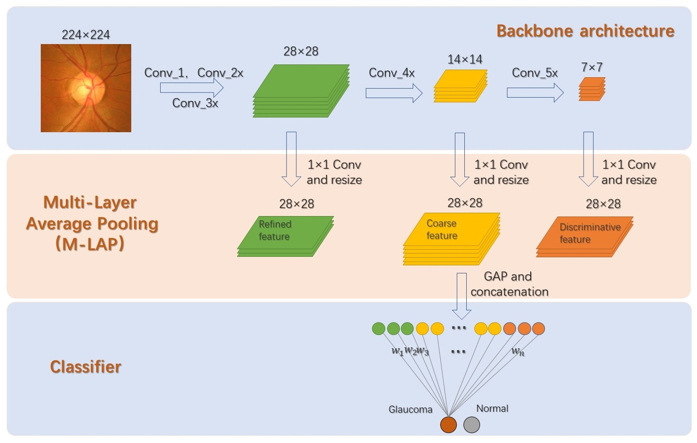
|
Clinical Interpretable Deep Learning Model for Glaucoma Diagnosis. |
|
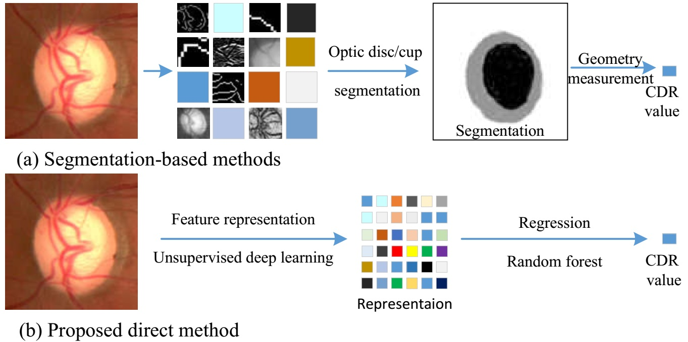
|
Direct Cup-to-Disc Ratio Estimation for Glaucoma Screening via Semi-supervised Learning. |
|
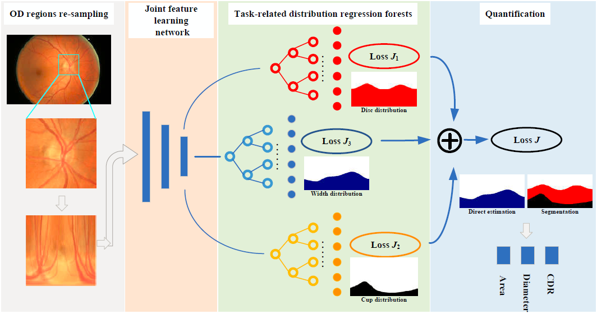
|
Multi-index Optic Disc Quantification via MultiTask Ensemble Learning. |
|
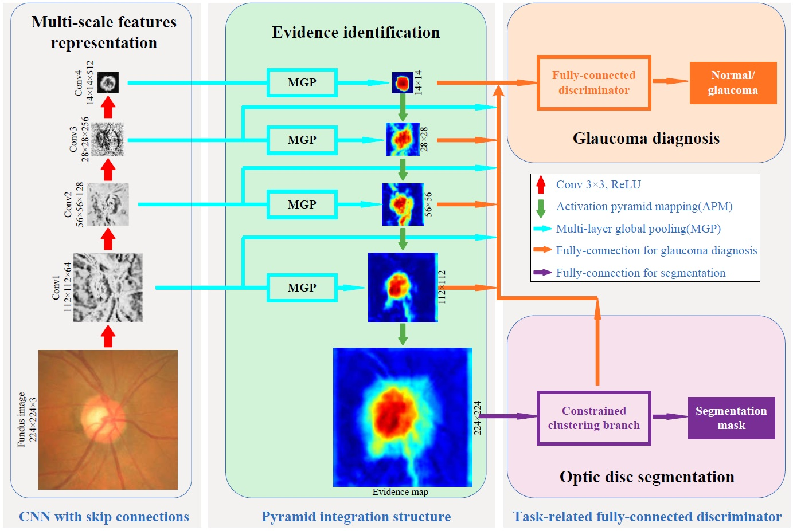
|
Weakly-Supervised Simultaneous Evidence Identification and Segmentation for Automated Glaucoma Diagnosis. |
Orientation histogram-based center-surround interaction: an integration approach for contour detection.
Rongchang Zhao , Min Wu, Xiyao Liu, Beiji Zou and Fangfang Li.
[paper]
Neural Computation, 2017.
A region segmentation method for region-oriented image compression.
Rongchang Zhao and Yide Ma.
[paper]
NeuroComputing, 2012.
Retinal vessel segmentation in colour fundus images using Extreme Learning Machine.
Chengzhang Zhu, Beiji Zou, Rongchang Zhao , Jinkai Cui, Xuanchu Duan, Zailiang Chen, Yixiong Liang.
[paper]
Computerized Medical Imaging and Graphics, 2017.
Novel robust zero-watermarking scheme for digital rights management of 3D videos.
Xiyao Liu, Rongchang Zhao* , Fangfang Li, Shenghui Liao, Yipeng Ding and Beiji Zou.
[paper]
Signal processing: Image communication, 2017.
Retinal vessel optical coherence tomography images for anemia screening.
Zailiang Chen, Yufang Mo, Pingbo Ouyang, Hailan Shen, Dabao Li and Rongchang Zhao .
[paper]
Medical & biological engineering & computing, 2018.
Chinese micro-blog sentiment classification through a novel hybrid learning model.
Fangfang Li, Huanting Wang, Rongchang Zhao* , Xiyao Liu, Yanzhen Wang and Beiji Zou.
[paper]
Journal of Central South University, 2017.
Optic cup segmentation using large pixel patch based CNNs.
Yundi Guo, Beiji Zou, Zailiang Chen, Qi He, Qing Liu and Rongchang Zhao .
[paper]
Ophthalmic Medical Image Analysis (OMIA) workshop of MICCAI, 2016.
Automatic anterior lamina cribrosa surface depth measurement based on active contour and energy constraint.
Zailiang Chen, Peng Peng, Beiji Zou, Hailan Shen, Hao Wei and Rongchang Zhao .
[paper]
Journal of Computer Science and Technology, 2017.
Localisation and segmentation of optic disc with the fractional-order Darwinian particle swarm optimisation algorithm.
Fan Guo, Hui Peng, Beiji Zou, Rongchang Zhao and Xiyao Liu.
[paper]
IET Image Processing, 2018.